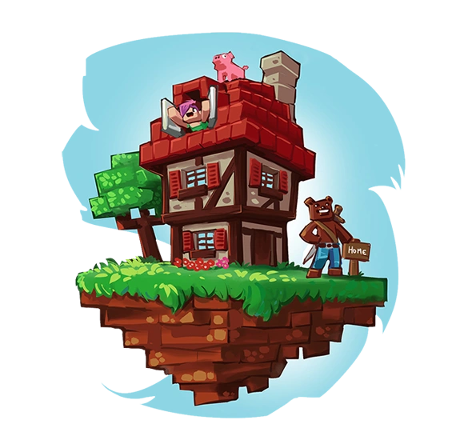
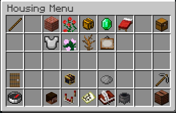

What is this website about?
This website is a wiki made for Hypixel Housing except it also includes player-made content and guides, and not just the mini-game itself.
What is this website about?
This website is a wiki made for Hypixel Housing except it also includes player-made content and guides, and not just the mini-game itself.

What is Housing?
To sum it up, Housing is a mini-game on a Minecraft server "Hypixel" where you can make mini-games called "Houses". You can allow other players to join your house to play on it, or to help you make it. You don't have to make mini-games. You can make parkours, or just show off your builds to others. The sky is the limit!
How are Houses made?
Houses are made using the IDE (Integrated Development Environment) provided by Hypixel. Players can use varioius tools or blocks to create their desired structures and gameplay elements.
